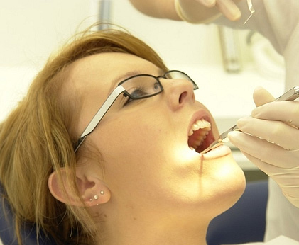

-

牙周病困扰！
这些痛苦，你是否也感同身受？忍无可忍，无需再忍！科瓦齿科帮你彻底摆脱牙周病困扰
-
01:刷牙，咬硬物时牙龈出血
刷牙，牙龈出血；咬东西，牙龈出血；连说话说着牙齿都能渗血丝了……朋友戏称我是不是要蜕变成吸血鬼了。虽然是个善意的调侃，但是我真是受不了这样的自己！
-
02:持续性的口气
我不抽烟，每天2次认真刷牙、刷舌苔，可是嘴里还是有浓浓的口气。每次和别人聊天，对方那不经意的从亲近到慢慢调开距离，心里真是接近崩溃的边缘，再这样下去，感觉自己要成绝缘体了！
-
03:牙龈红肿、出血、疼痛
最近牙肉一直发炎，每个月有大半个月时间都是处于上火状态，牙龈都红肿发亮，成暗红色了，碰不得，刷牙刷不得，吃东西热了疼，冷了也疼。吃了一堆的消炎药清火药也不见好转。这样下去不知道何时才是个头
-
04:现牙缝，咀嚼无力，牙齿松动
我才40岁，原本紧密无间的牙齿出现了缝隙，有的牙齿还越长越长，开始移位了；硬的东西咬不动，软的东西吃不下。最近还有几颗牙齿开始松动了，感觉随时就会掉下来。这是要提前衰老了吗？